1.目的
本研究では福井県の獣害被害を減らすことを目的とする。
従来の網や檻を使った対策ではなく、ICTを利用した追い払いを目的とした
獣害対策を行い、ICT機器の動作検証・効果範囲の拡大を行う。
従来の網や檻を使った対策ではなく、ICTを利用した追い払いを目的とした
獣害対策を行い、ICT機器の動作検証・効果範囲の拡大を行う。
2.方法
実験地 ：福井県越前市奥宮谷町の田んぼ
実験装置 ：GKS-02,GKS-10
設置時期 ：2020/1/24
設置場所 ：図1を参照
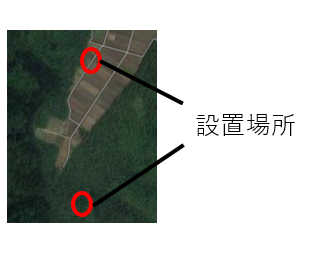
装置動作範囲 ：3方向270度・12ｍ～20ｍ前後
撮影装置 ：TREL3G-Rネットワークカメラ,DIGTAL TRAIL CAMERA
撮影機設置場所：図2を参照
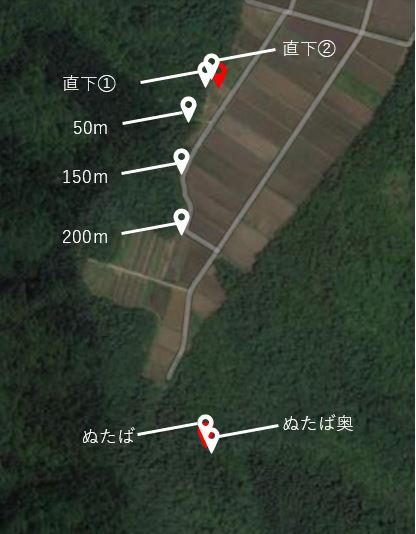
撮影時期 ：表1を参照
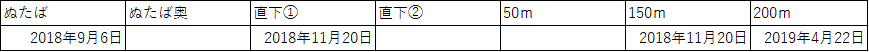
実験装置 ：GKS-02,GKS-10
設置時期 ：2020/1/24
設置場所 ：図1を参照
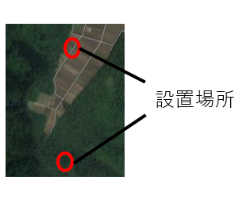
装置動作範囲 ：3方向270度・12ｍ～20ｍ前後
撮影装置 ：TREL3G-Rネットワークカメラ,DIGTAL TRAIL CAMERA
撮影機設置場所：図2を参照
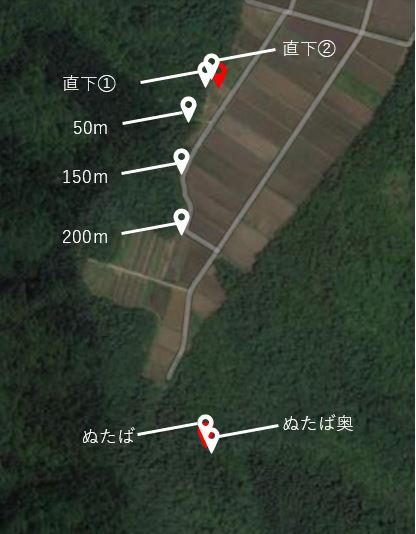
撮影時期 ：表1を参照
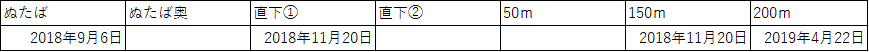
3.結果
ぬたば
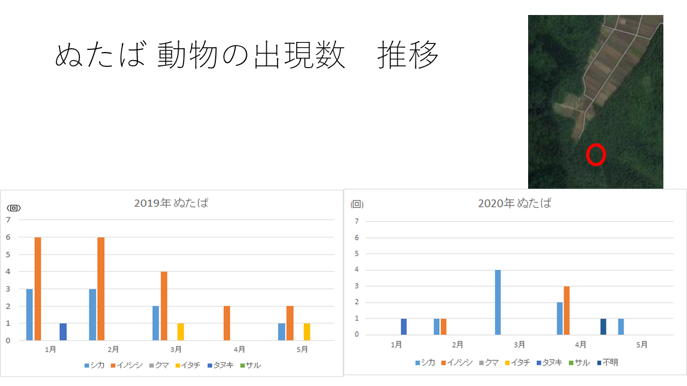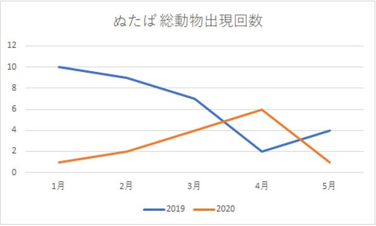
・2019年に撮影して集計された動物出現数と比較して出現回数が減った
・2019年は1月から5月にかけて出現数が減少している
・2020年は1月から5月にかけて出現回数が増加している
・2019年はイノシシが多く、2020年はシカが多い
直下
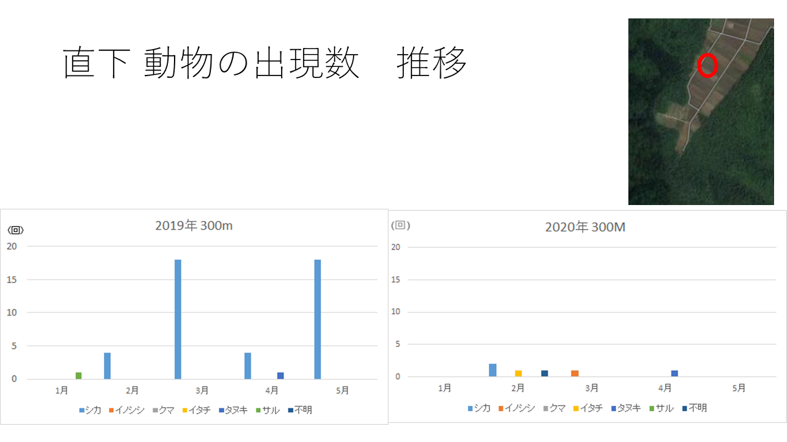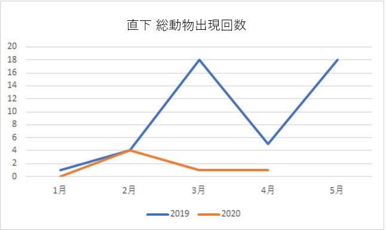
・動物の出現回数が減少している
・2019年はシカが最も出現しているが、2020年は様々な動物がまばらに出現している
・2019年は動物出現が増加していたが、2020年は出現が一定である
200ｍ
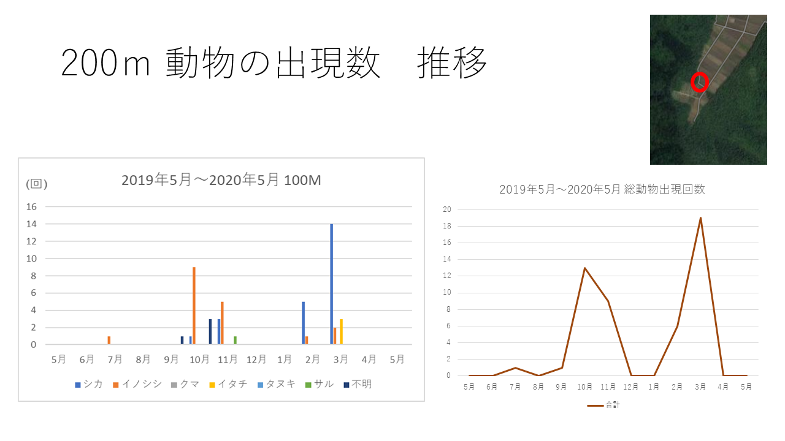
・2019年4月末にカメラを設置したため2019年度との比較ができない
・シカの出現回数が最も多い
・2月3月と動物出現数が増加していたが、4月は出現しなかった
・動画を見ていると南側から北側に来る傾向がある
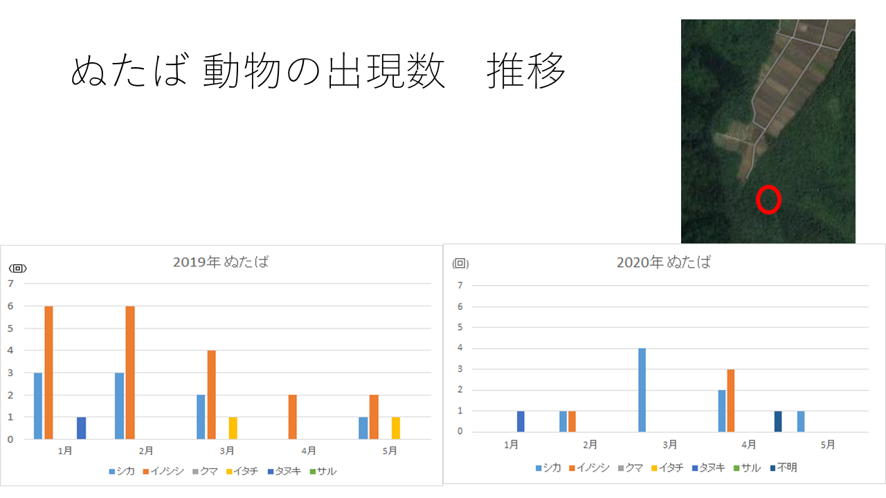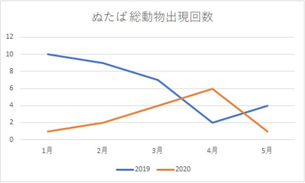
・2019年に撮影して集計された動物出現数と比較して出現回数が減った
・2019年は1月から5月にかけて出現数が減少している
・2020年は1月から5月にかけて出現回数が増加している
・2019年はイノシシが多く、2020年はシカが多い
直下
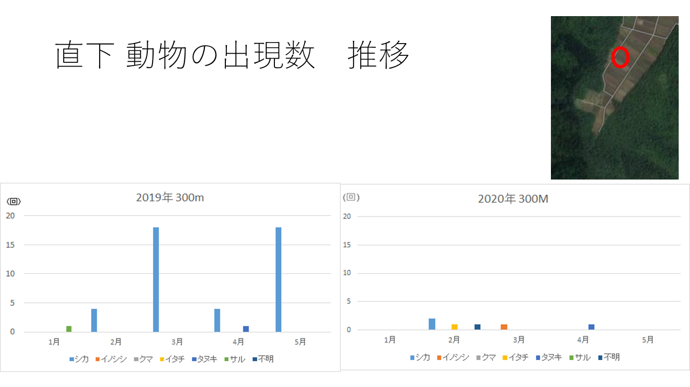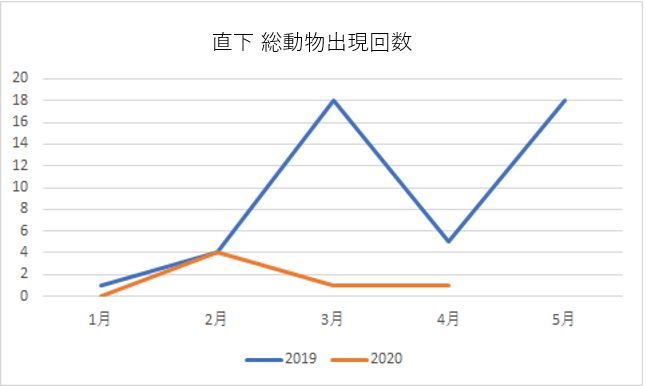
・動物の出現回数が減少している
・2019年はシカが最も出現しているが、2020年は様々な動物がまばらに出現している
・2019年は動物出現が増加していたが、2020年は出現が一定である
200ｍ
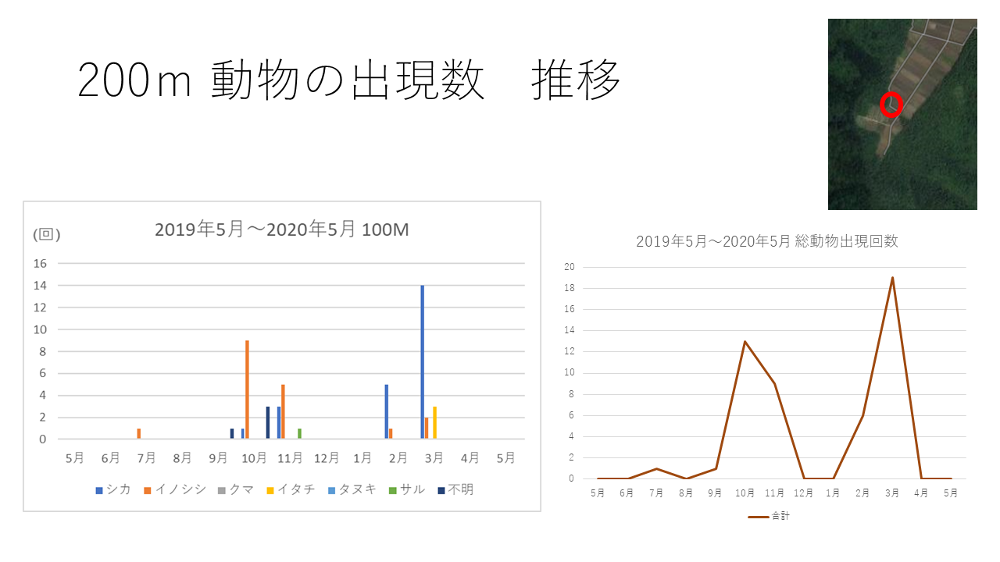
・2019年4月末にカメラを設置したため2019年度との比較ができない
・シカの出現回数が最も多い
・2月3月と動物出現数が増加していたが、4月は出現しなかった
・動画を見ていると南側から北側に来る傾向がある
4.考察
・・・
5.結論
・・・
6.参考文献
・・・・